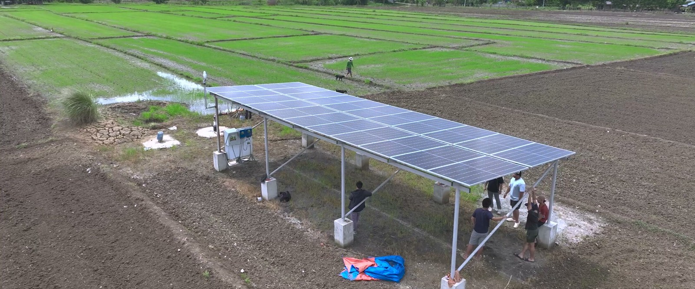

Bomba solar para irrigação
Irrigação solar inteligente
A bomba funciona com o sol e a irrigação acontece quando o solo pede. Sem diesel, com o sistema projetado para a sua propriedade.

- Sem diesela bomba funciona com o sol
- Pelo soloa irrigação segue a umidade, não o calendário
- De 1 a 10 hasistemas de referência; até 30 ha por bomba
- 10 a 14 semanasdo pedido ao embarque
O resto está na ficha técnica
Aqui estão as manchetes. Componentes, sistemas de referência e garantias vêm em PDF, em português, no seu e-mail.
- Componentes
- Sistemas de referência
- Garantias
- Entrega
Ou mande uma mensagem direto por e-mail, info@agrotechdaholanda.com.br, ou pelo Instagram, @agrotech_da_holanda.
Como funciona
Irriga quando o solo pede
Painéis, bomba e controle trabalham como um sistema só. Nos sistemas completos, sensores medem o solo e o clima, e a central de controle liga a bomba na hora certa.
- Painéis solaresGeram a energia da bomba, sem diesel e sem rede.
- Bomba solarSubmersa no poço, ou de superfície, no rio ou açude.
- Inversor para bombeamento solarAciona a bomba direto com a energia dos painéis.
- SensoresMedem o solo, a água e o clima, nos sistemas completos.
- Central de controleLiga a bomba quando o solo pede.
- AplicativoVocê acompanha e comanda pelo celular.
Potências, vazões e os opcionais (válvulas, hidrociclone, fertirrigação, bateria): na ficha técnica.
Sistemas de referência
De 1 a 10 ha, com poço ou superfície
Configurações da Dutch Flow Technology. Áreas maiores, até 30 ha por bomba, são dimensionadas caso a caso.
| Sistema | Fonte de água | Área | Sensores e controle |
|---|---|---|---|
| Poço, 1 ha | Poço | 1 ha | Não |
| Poço, 4 ha | Poço | 4 ha | Só aplicativo |
| Poço, 10 ha básico | Poço | 10 ha | Não |
| Poço, 10 ha completo | Poço | 10 ha | Sim |
| Superfície, 1 ha | Rio ou açude | 1 ha | Não |
| Superfície, 4 a 10 ha básico | Rio ou açude | 4 a 10 ha | Não |
| Superfície, 4 a 10 ha completo | Rio ou açude | 4 a 10 ha | Sim |
Sem preço aqui. O preço varia muito com a área, a fonte de água, a altura manométrica, a cultura e os opcionais, por isso vem sempre numa proposta detalhada.
Bomba, painéis e garantias de cada sistema: na ficha técnica.
Retorno
Se paga em cerca de 2 a 5 anos, só com o dieselPoço fundo e cultura que pede muita água: retorno mais rápido. Rio perto e pouca irrigação: mais lento. A conta usa uma estimativa de custo do sistema posto no Brasil e o preço médio do diesel S-10 (ANP, julho de 2026). O valor exato sai da proposta.
Do projeto à água
Oito respostas, quatro fases
O projeto vem antes da compra. Tudo começa com oito respostas, e responder não gera compromisso de compra.
- Cultura
- Área
- Densidade de plantio
- Necessidade hídrica
- Localização
- Solo
- Fonte de água
- Tipo de irrigação
- 1Levantamento e projetoTopografia, solo e necessidade hídrica; depois, o projeto.
- 2Fornecimento e instalaçãoPainéis, bomba, sensores e controle entregues e instalados.
- 3IntegraçãoA irrigação passa a seguir a umidade do solo.
- 4Teste e treinamentoPressão, vazão e treinamento da equipe da fazenda no local.
As oito perguntas, uma a uma, estão na ficha técnica
Com os componentes, os sistemas de referência completos e as garantias.
Ou mande uma mensagem direto por e-mail, info@agrotechdaholanda.com.br, ou pelo Instagram, @agrotech_da_holanda.
Também precisa de frio?
A câmara fria solar resfria a colheita na fazenda, com sol e bateria.
Proposta detalhada
Conte o que você planta, quanto e onde.
Respondemos com uma proposta detalhada, com o preço, sem compromisso.
Ou mande uma mensagem direto por e-mail, info@agrotechdaholanda.com.br, ou pelo Instagram, @agrotech_da_holanda.
Perguntas frequentes
Como funciona a bomba solar para irrigação?
Os painéis solares alimentam um inversor para bombeamento solar, que aciona a bomba diretamente, sem diesel. A bomba pode ser submersa, no poço, ou de superfície, em rio ou açude. Nos sistemas completos, a central de controle liga a bomba quando a umidade do solo pede.
Ele irriga sozinho?
Nos sistemas completos, sim. A central de controle lê os sensores e liga a bomba quando o solo pede, em vez de seguir um calendário fixo. Você acompanha e pode comandar pelo celular.
O que o sistema mede?
Nos sistemas completos, sensores medem o solo, a água e o clima. O que cada sensor mede está na ficha técnica.
Serve para que tamanho de área?
Os sistemas de referência vão de 1 a 10 ha. Áreas maiores, até 30 ha por bomba, são dimensionadas caso a caso.
Preciso de outorga para captar a água?
Sim. A captação de água no Brasil depende de outorga do órgão estadual ou federal. A outorga é por conta do produtor, e ajudamos no processo desde a primeira conversa.
Quanto custa?
Não há preço no site. O preço varia com a área, a fonte de água, a altura manométrica, a cultura e os opcionais, e vem numa proposta detalhada, sem compromisso.
Quanto o diesel me custa hoje?
Depende da sua área, da sua cultura e do preço que você paga. A calculadora faz essa conta com os seus próprios números.
Já existe algum sistema instalado no Brasil?
Ainda não há nada instalado no Brasil. A Dutch Flow Technology opera um sistema em San José, nas Filipinas. Procuramos as primeiras fazendas para um piloto; veja como funciona.
Acompanhe o primeiro piloto no Instagram
Em vídeos curtos, mostramos como a irrigação solar e a câmara fria funcionam. E vamos acompanhar a primeira fazenda do Brasil da primeira conversa até os primeiros números medidos.